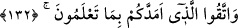
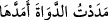
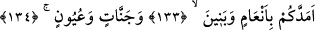

“__WORD__ saldırarak, yani zor kullanarak ve galebeyle bir şeyi yakalamaktır. Hak ve
adâleti temin etmek için güç kullanmak ise câizdir. Cebbâr, gazab ve öfkeyle vuran ve
öldüren kimseye denir.
131. Artık Allah’tan korkun ve bana itâat edin.
“Artık Allah’tan korkun” yüksek binalar, yüksek mekanlar edinmeyi; havuzlar,
bahçeler yaparak malı israf etmeyi ve haksız yere zorbalık yapmayı terk edin. “Ve” sizi
dâvet ettiğim tevhîd, adâlet, insaflı davranmak, emeli terk etmek ve benzeri konularda
“bana itaat edin.” Çünkü bu sizin için daha faydalıdır.
132. Bildiğiniz şeyleri size bol bol veren, Allah’tan korkun.
“Bildiğiniz şeyleri” çeşit çeşit, türlü türlü nimetleri “size bol bol veren, Allah’tan
korkun.”
“__WORD__ ikinci olan bir şeyi kendisinden öncekine bir düzen içinde yavaş yavaş tâbi
kılmaktır. “__WORD__ daha çok sevilen şeyler için, “__WORD__ ise hoşa gitmeyen haller için
kullanılır. “
…deniz de arkasından yedi deniz katılarak
(mürekkep olsa)…” (Lokman, 31/27) âyetine gelince, o “
Hokkanın
mürekkebini arttırdım. Hokkanın mürekkebini artırdı.” anlamınadır, yoksa yukarıdaki
fiilden değildir.
Nimetler önce icmâlen belirtilmiş, sonra şu âyetle ayrıntıları ifâde edilmiştir:
133-134. O size davarlar, oğullar, bahçeler ve çeşmeler verdi.
“O size davarlar,” deve, inek ve koyun gibi hayvanlar “oğullar,” her durumda sizin
yardımcılarınız olan çocuklar “bahçeler” meyvelerinden faydalandığınız bahçeler “ve
çeşmeler” sulamada kullandığınız ve ekinlerinizin gelişip yetişmesinde faydalandığınız
akarsular “verdi.” faydalanmanız için size yardım etti.